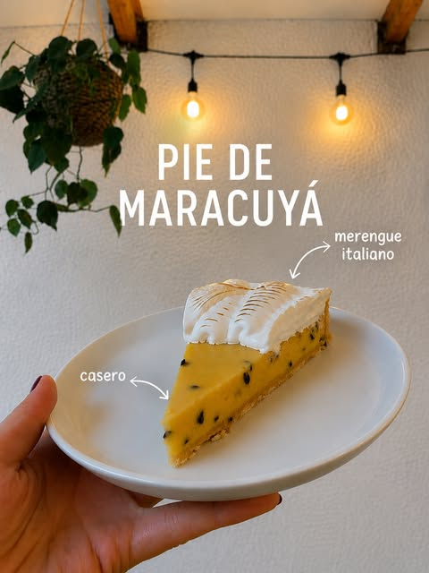
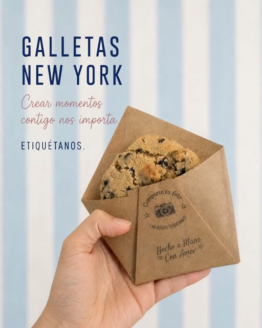
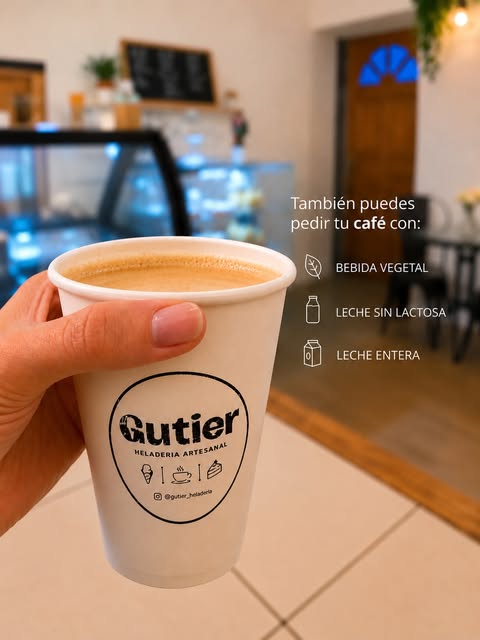

Helados artesanales
Hechos en el local. Los más nombrados en las reseñas: el de sabor a torta y el de yogurt con frutilla.

Helados · Café · Dulcecitos · Ciudad Satélite
Heladería y cafetería de barrio en Ciudad Satélite, Maipú. Helados hechos acá mismo, café y pastelería casera, en un local pet friendly.
Sábado 12 de septiembre, desde las 18:00 en el local.
Hechos en el local. Los más nombrados en las reseñas: el de sabor a torta y el de yogurt con frutilla.
"El café estaba delicioso, con un aroma…" — de una reseña real de Google. Acompaña bien cualquier dulce.
Pie de maracuyá con merengue italiano, galletas New York y los dulcecitos del día.
Gutier es una heladería y cafetería de barrio en Ciudad Satélite, Maipú: helados artesanales, café y pastelería hecha en casa, en un local donde además se arman tardes con música en vivo.
Con 4.9 estrellas en Google es de las mejor evaluadas de la comuna, y algo que se nota al leer las opiniones: el local responde una por una, agradeciendo a cada persona que pasó.
Los distintivos de LGBTQ+ y emprendimiento de mujer son los que la propia ficha de Google le reconoce al local.


Productos confirmados del local. Los precios se consultan directamente por WhatsApp — arma tu pedido y escríbenos.
"¡No tiene competencia, lejos el mejor helado de Santiago! Variedad de sabores, su atención inigualable, gracias. Recomiendo 100%."
"Visité la heladería y cafetería Gutier ubicada en Ciudad Satélite, Maipú y quedé encantada con el servicio. El lugar tenía un ambiente acogedor, agradable, perfecto para compartir un momento especial. El café estaba delicioso."
"Muy ricos sus helados, el que tiene sabor a torta tiene un manjar muy rico, yogurt de frutilla también muy bien."